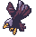
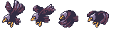

Animations Editor
Sprite animations are the most frequent option to animate characters in Phaser games. The principle of this animation technique is the displaying of a sequence of images (frames), at a given “speed” or frame rate.
Animation:
Animation frames:
In Phaser v3, the animations are created as global objects, in the animations manager:
You can create a single animation:
this.anims.create({
"key": "acorn",
"frameRate": 12,
"repeat": -1,
"frames": [
{
"key": "atlas",
"frame": "acorn-1"
},
{
"key": "atlas",
"frame": "acorn-2"
},
{
"key": "atlas",
"frame": "acorn-3"
}
]
});
Or multiple animations:
this.anims.fromJSON(
"anims": [
{
"key": "acorn",
// ....
},
{
"key": "player",
// ....
}
]
);
in the practice, you create all the animations once in the game, probably in the preloader scene. Then, you can play an animation on a sprite object passing the animation key to the play(..) method:
mySprite.play("acorn");
Other way to create the animations is packing them all in a single JSON file, and load the file using the this.load.animation(..) method:
this.load.animation("my-anims", "assets/animations.json");
Phaser Editor 2D provides the Animations Editor, to create the animations JSON file. So, the workflow is very simple:
Create the animations JSON file with the Animations Editor.
Import the animations JSON file into an Asset Pack file with the Asset Pack Editor.
Play the animations in your code, with the play(..) method.